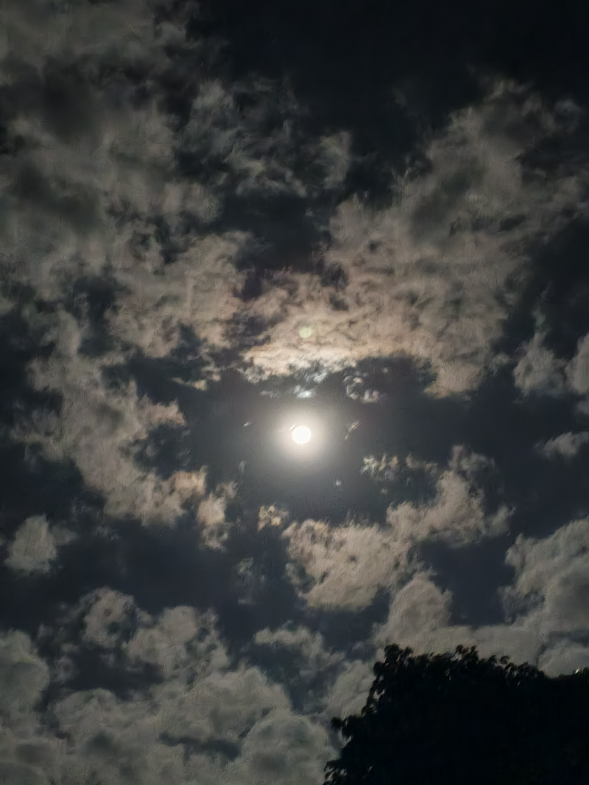
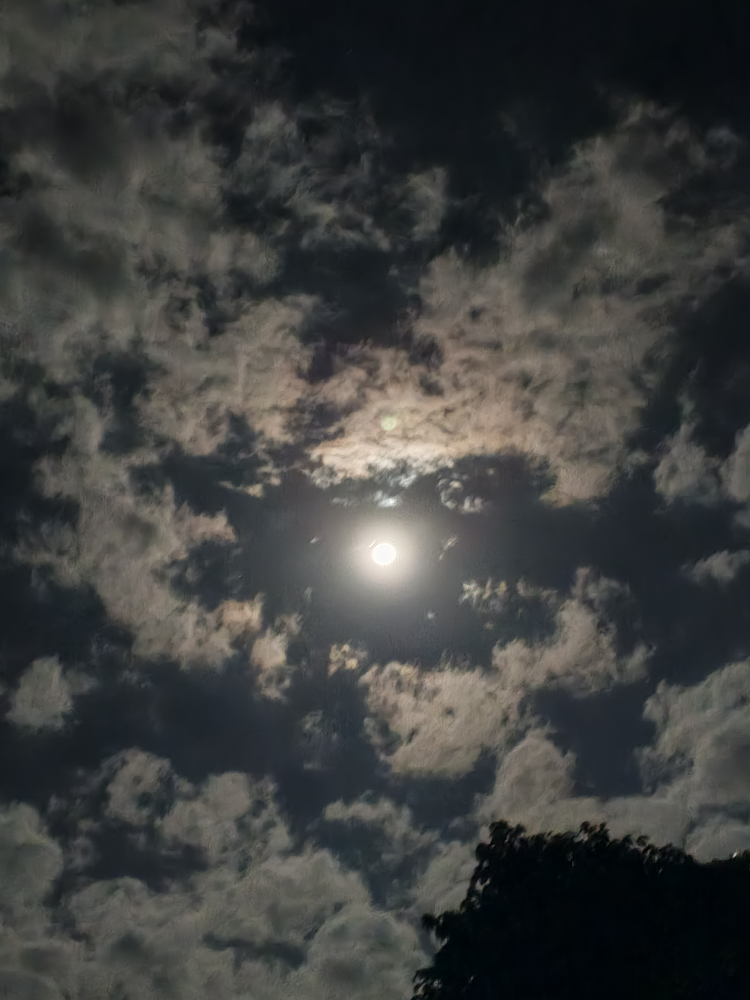

-Hi, my name is Kelvin Korir,I specialize in capturing nature photos and also scenic personal photos, I am based in Nairobi and within Kenya.My approach centers on a natural and relaxed style, ensuring that every session feels effortless and results in timeless images you'll treasure forever.In addition my goal is to create favourable moments that turn into permanent memories.I'd love to connect and chat about how we can bring your vision to life,feel free to explore my portfolio or reach out to book your session.
 
